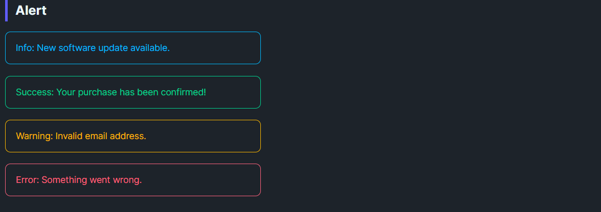

DaisyAlert is a compact callout for inline status messages. It provides 4 semantic variants (Info, Success, Warning, Error), optional icon content, and a simple two-column layout that keeps messages readable without dominating the page. Use it for persistent notices inside forms, cards, or panels; pair with DaisyToast for transient alerts.
| Variant | Description |
|---|---|
| Info | Calm blue outline and text for neutral updates or instructions. |
| Success | Green outline/text for confirmations and “saved” states. |
| Warning | Amber outline/text for cautions and required attention. |
| Error | Red outline/text for failures and blocking issues. |
Content; it supports plain text or any UI element.Icon property accepts any object/element and shows in a leading slot with a small gutter. If Icon is omitted or null, the icon column collapses automatically.<!-- Basic variants -->
<controls:DaisyAlert Content="Info: New software update available." Variant="Info" />
<controls:DaisyAlert Content="Success: Profile updated." Variant="Success" />
<controls:DaisyAlert Content="Warning: Password is weak." Variant="Warning" />
<controls:DaisyAlert Content="Error: Could not save changes." Variant="Error" />
<!-- With a custom icon -->
<controls:DaisyAlert Variant="Info">
<controls:DaisyAlert.Icon>
<PathIcon Data="{StaticResource DaisyIconInfo}" Width="18" Height="18" />
</controls:DaisyAlert.Icon>
<TextBlock Text="You can change these settings later." TextWrapping="Wrap" />
</controls:DaisyAlert>
<!-- Inline inside a form -->
<StackPanel Spacing="8" Width="420">
<TextBlock Text="Email address" />
<TextBox Text="{Binding Email}" />
<controls:DaisyAlert Variant="Warning" Content="We'll use this to verify your account." />
</StackPanel>
<!-- Dynamic status surface -->
<controls:DaisyAlert x:Name="StatusAlert" Variant="Success">
<TextBlock Text="{Binding StatusMessage}" />
</controls:DaisyAlert>Icon for critical states (Warning/Error) to increase recognition at a glance.Margin="0,4") to avoid a wall of color.